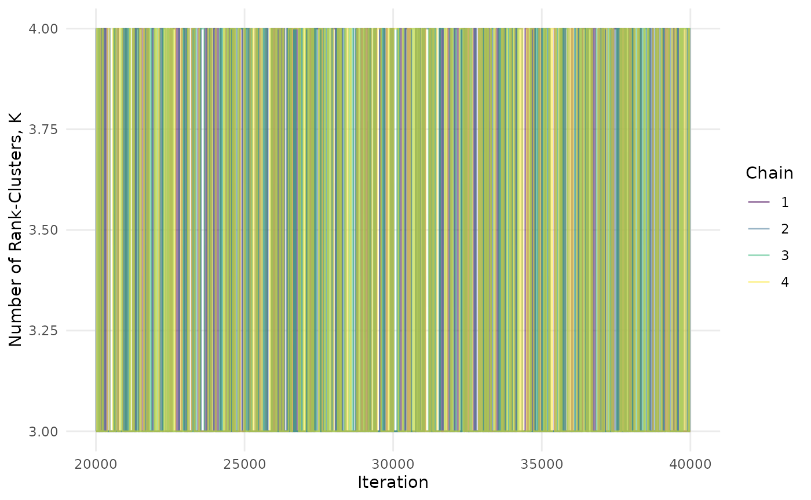

In this tutorial, we demonstrate the key functionality of the
RaCE.NMA package on a hypothetical dataset of results from
a network meta-analysis (NMA). The tutorial includes code for model
estimation and visualization of results. We begin by loading necessary
packages.
Exploratory Data Analysis
mu_hat <- c(-1, 0, 1, 0)
sigma_hat <- c(0.1, 0.1, 0.1, 1)
data <- t(matrix(rnorm(10000,mean=mu_hat,sd=sigma_hat),nrow=4))
ggplot(as.data.frame(melt(data)),aes(x=factor(Var2),y=value))+
geom_violin()+theme_bw()+theme(panel.grid.minor = element_blank(),panel.grid.major.x = element_blank())+
labs(x="Treatment",y="Posterior Relative Intervention Effect")
Estimation
Now, let’s fit the RaCE model to our data.
mcmc <- mcmc_RCMVN(mu_hat = mu_hat, sigma_hat = sigma_hat, # data
mu0 = mean(mu_hat), sigma0 = sqrt(10)*var(mu_hat), #hyperparameters
nu0 = mu_hat,
tau = 1, num_iters = 20000, nu_reps = 2, # algorithm parameters
chains = 4,burn_prop = 0.5, thin = 1, suppressPrint = TRUE)First, we ensure the chains have converged by assessing trace plots of and .
ggplot(mcmc,aes(x=iteration,y=K,group=chain,color=chain))+
geom_line(alpha=0.5) + scale_color_viridis_d() + theme_minimal() +
labs(x="Iteration",y="Number of Rank-Clusters, K", color="Chain") +
theme(panel.grid.minor = element_blank())
ggplot(data = melt(mcmc[,c("chain","iteration",paste0("mu",1:length(mu_hat)))],id.vars = c(1,2)),
aes(x=iteration,y=value,color=chain,group=chain)) +
geom_line(alpha=0.5) + scale_color_viridis_d() +
facet_wrap(~variable) + theme_minimal() + labs(x="Iteration",y="Value",color="Chain") +
theme(panel.grid.minor = element_blank())Inference
J <- length(mu_hat)
posterior_equal <- matrix(NA,nrow=J,ncol=J)
for(i in 1:(J-1)){for(j in (i+1):J){posterior_equal[i,j] <- mean(mcmc[,paste0("G",i)] == mcmc[,paste0("G",j)])}}
post_ranks <- apply(t(apply(mcmc[,paste0("mu",1:J)],1,function(omega){rank(omega,ties.method="min")})),2,
function(rank){unlist(lapply(1:J,function(j){mean(rank==j)}))})
ggplot(melt(post_ranks),aes(x=factor(Var2,levels=paste0("mu",1:J),labels=paste0(1:J)),y=Var1,fill=value))+
geom_tile()+scale_y_continuous(breaks=1:4,limits=c(.5,4.5))+
scale_fill_gradient(low="white",high="black",limits=c(0,1))+
labs(x="Treatment",y="Rank",fill="Probability")+theme_minimal()+
theme(panel.grid = element_blank(),legend.position = "bottom")+
geom_text(aes(x=factor(Var2,levels=paste0("mu",1:J),labels=paste0(1:J)),y=Var1,label=round(value,2)),
color=ifelse(melt(post_ranks)$value>0.4,"white","black"))